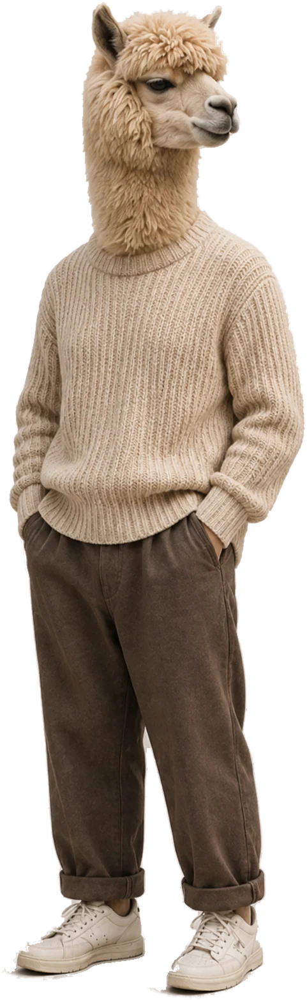
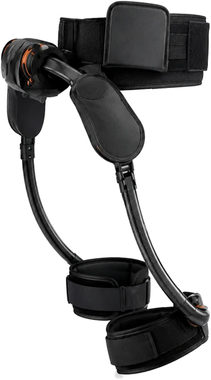
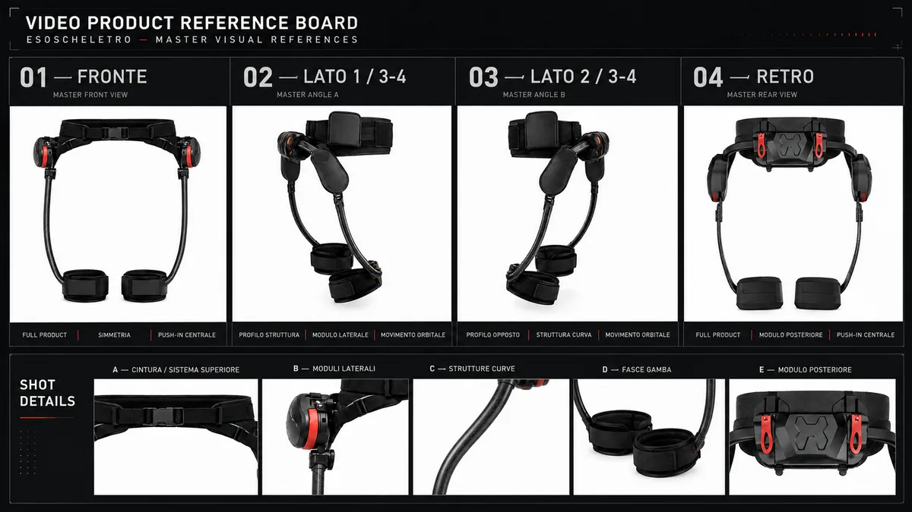
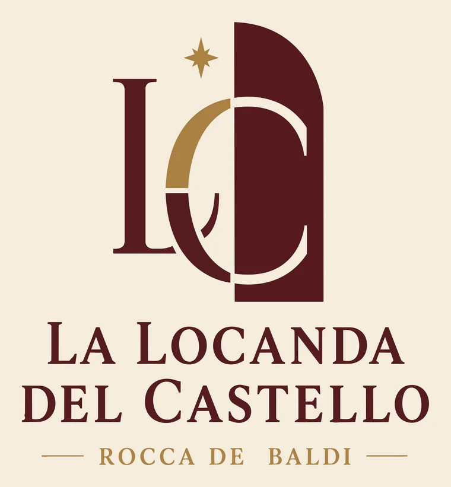
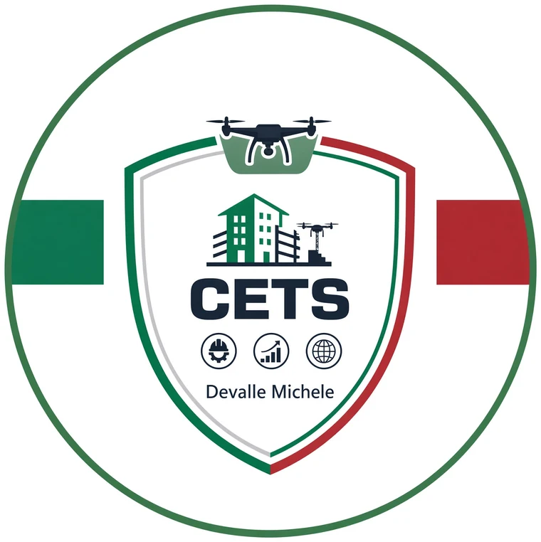

Grafica pubblicitaria
Creo la direzione visiva e la porto nei formati della campagna.
Key visual · Declinazioni · Motion graphic · Digitale e stampa
Questa scena richiede WebGL2. Il resto del sito funziona comunque.
Disegnato dal tuo browser · sessione aperta
F/AI · Grafica, foto, video, siti, automazioni e webapp — con l'AI dove serve, mai a caso
Grafico pubblicitario, fotografo, video editor, copywriter, web designer, AI builder.
Sistemi automatizzati per i social e per i compiti ripetitivi di tutti i giorni.
Strumenti tradizionali, agentica, modelli AI in locale o in cloud — separati o combinati, i migliori per ogni bisogno.
↔ Trascina il confine: decidi chi guida, tu o il sistema
↔ Trascina · tieni premuto per erodere il bordo · spazio cambia scena ↔ Trascina il confine · tieni premuto per erodere il bordoQuesta pagina Istruzioni
L'ho progettato io, e l'ho fatto scrivere riga per riga alle migliori AI di frontiera: grafica, animazioni, interazioni, codice. Le immagini che vedi non sono file caricati — le disegna il tuo browser adesso, e infatti puoi cambiarle. Tutto quello che cambi resta nel tuo browser: il sito non salva e non manda niente a nessuno.
Sette palette, dai pallini in alto a destra: ognuna calcolata perché il testo resti leggibile su fondo scuro e su carta.
Tieni premuto mezzo secondo su una scheda e trascinala dove vuoi — lavori, servizi, passi del metodo, strumenti — e i numeri si riscrivono da soli.
Tieni premuto sul titolo di una sezione: la pagina si richiude in una mappa, la sposti come una carta, e le caselle dove non può atterrare si spengono da sole.
Dodici colonne invisibili sotto tutto il sito: lascia il dito senza trascinare e scegli come si dispone quel gruppo, da una colonna a quattro.
Ogni lavoro ha un seed, il numero da cui nasce: cambialo e viene fuori un'immagine diversa che parla ancora la stessa lingua — un sistema, non un pezzo fortunato.
Quattro giochi scritti da zero, giocabili qui dentro: si sceglie il motore, si cambiano le regole, si prova.
Serve a due cose. La prima: capire cosa so fare senza dover credere a un elenco di competenze. La seconda: se una pagina così la costruisco per me, posso costruirla per te.
Prova 01 Servizi
Qui sotto c'è cosa consegno per ognuna delle quattro: non un elenco di competenze, ma cosa arriva davvero, come ci arrivo e dove puoi vederlo.
Cosa faccio, in concreto
Creo la direzione visiva e la porto nei formati della campagna.
Key visual · Declinazioni · Motion graphic · Digitale e stampa
Costruisco ritmo, racconto e finitura con riprese esistenti o generazione assistita.
Montaggio · Motion · Compositing · Formati brevi e lunghi
Trasformo una direzione creativa in format riconoscibili, facili da produrre con continuità.
Format · Template · Adattamenti · Flusso di revisione
Collego strumenti e controlli umani per ridurre il lavoro ripetitivo e provare nuove idee in fretta.
Automazioni · Agenti · Prototipi · Locale o cloud
Web design e prototipazione sono capacità trasversali: le uso quando il progetto richiede un’esperienza o un’applicazione.
Software mio Fiori all’occhiello
Non sono dimostrazioni per il portfolio: sono nati perché quello che mi serviva non esisteva, o costava un abbonamento al mese per una funzione sola — la risposta più diretta a «ma tu cosa sai costruire».
Un’applicazione web che porta i miei canali social dall’inizio alla fine: legge le fonti, sceglie cosa vale, produce i video, pubblica. Ogni passaggio resta visibile e fermabile — non è una scatola nera.
Legge cinque fonti via API ufficiali, senza ripetersi mai.
Legge cinque fonti in ordine di priorità, con le API ufficiali dove esistono.
Ricorda cosa ha già pubblicato — la stessa cosa non esce mai due volte — e riprende da dove si era fermato anche dopo uno stop.
Trasforma immagini ferme in Reel, con musica generata su misura.
Trasforma un’immagine ferma in un Reel: un modello scrive il movimento, ComfyUI lo esegue con un flusso immagine-a-video.
Verifica da solo proporzioni, fotogrammi e composizione, e genera una base musicale diversa per ogni Reel — i contenuti già video passano diretti.
Decine di uscite al giorno su sei piattaforme, in automatico.
Facebook, Instagram, YouTube, LinkedIn, Threads, Telegram — solo API ufficiali, solo account che ho collegato.
Quattro uscite per pagina a orari fissi: fra tutte le destinazioni, decine di pubblicazioni al giorno, e se una fallisce le altre vanno avanti.
Calendario visibile, stop immediato, statistiche per canale.
Calendario con testo, media e orario visibili prima che escano; stop immediato e ripartenza senza doppioni.
Statistiche per canale, token che si rinnovano da soli, e un registro locale di cosa è successo.
Qualunque AI da riga di comando, con accesso protetto.
Si collega a qualunque AI da riga di comando — Claude, GPT, Gemini, Grok o un modello locale — con un server MCP per parlare agli assistenti.
Accesso protetto, e un sito pubblico con privacy e termini: senza quello le piattaforme non danno le API.
Un’applicazione per Windows che scarica video autorizzati e ne ricava trascrizione e sottotitoli — tutta sul computer, senza caricamenti né costo al minuto.
Da fonti autorizzate, in coda, riprende se cade la rete.
Da fonti autorizzate, nei formati e nelle qualità che servono.
Più scaricamenti in coda, che riprendono se cade la rete.
Voxtral e Whisper, sottotitoli correggibili parola per parola.
Voxtral per il parlato, con Whisper di riserva, e una rilettura prudente prima di darlo per finito.
Sottotitoli sincronizzati e correggibili parola per parola, col secondo esatto in cui ognuna compare.
Nessun caricamento, nessun costo al minuto, versione portatile.
Lavora sulla scheda video: nessun caricamento, nessun costo al minuto.
Versione portatile con tutto dentro: si copia su una chiavetta e parte.
Se ti serve uno strumento che non esiste — un pannello, un configuratore, un flusso che lavora da solo la notte — è esattamente questo il lavoro.
La stessa direzione ricomposta per sei proporzioni. Non è un ridimensionamento: cambia la griglia, la scala tipografica e cosa resta fuori. Muovi la leva e guarda i formati cambiare insieme.
Prova 02 Lavori
Un mondo inventato, il lancio di un prodotto che non si poteva fotografare, l’identità di una locanda in un castello, un marchio nato da zero per chi amministra condomìni. Per ognuno: il marchio, i pezzi finiti da guardare qui, la lista di cosa c’è sotto. Nessun video parte da solo.
Caso Campagna in corso
Union Energiaper Roberto Baldizzone
Brand identity dentro un marchio che esisteva già: un universo parallelo dove una cometa a forma di 0 azzera le bollette e trasforma gli animali in bipedi che parlano — Davide il lama, Luca l’asino e gli altri, energia pulita raccontata senza fare una lezione, con una storia che continua a crescere.
Union Energia Uniti si vince
Insieme per un domani più verde

Nove pezzi della campagna · nessuna ripresa dal vivo
I pezzi nascono come immagini con GPT Image, si muovono con Gemini Omni — che costruisce anche i personaggi che sembrano persone vere — e si montano in Adobe Premiere Pro, con ritmo, sottotitoli e grafica di campagna.
Caso Prodotto e lancio
Esoscheletri per la mobilitàHuman Robots · Strider-X · E-Legs
Esoscheletri attivi per chi fatica a camminare e per chi va in montagna. Niente set, niente attori, niente prodotto in mano: il lancio italiano è costruito tutto a monte — ricerca di mercato, immagini del dispositivo, spot, sito. La parte difficile: che l’oggetto sia lo STESSO in ogni inquadratura, e il tono regga sia in una palestra di riabilitazione sia su un crinale a duemila metri.
Human Robots Tecnologia che cammina con te
Un prodotto vero, raccontato prima di poterlo riprendere

Sei pezzi · dal trailer al product film

Le scene nascono come immagini con GPT Image, si sistemano in Photoshop e si montano in Adobe Premiere Pro: inquadrature generate una per una, di una cinquantina di spezzoni ne entra meno della metà.
Caso Marchio e locandine
La Locanda del CastelloRocca de’ Baldi
Un ristorante nel parco di un castello, senza un’identità sua: prima il marchio, poi una locandina animata per ogni serata — dalla degustazione di champagne al karaoke — e cinque brani scritti su misura. Serate diverse, tono diverso, ma in due secondi su un telefono si deve capire che è sempre la stessa casa.
In Piemonte la tradizione è servita a tavola
Rocca de’ Baldi, Piazza Pio VII

Nove locandine animate · una per ogni serata
Le locandine nascono come immagini con GPT Image, si sistemano in Photoshop, si muovono con Grok Video e si montano in Adobe Premiere Pro, che aggiunge testi, prezzo e il marchio di chiusura.
Cinque brani scritti per la casa · trenta secondi ciascuno
Caso Marchio e campagna
Studio CETSper Michele Devalle
Un centro elaborazione dati per amministratori di condominio — antincendio, GSA, rilievi con drone — e un marchio che non esisteva: prima lo scudo, poi la campagna. Il pubblico è uno stretto e non compra sogni, compra ore: ogni pezzo parte da una rogna vera e arriva alla stessa promessa da una porta diversa.
Studio CETS Cambia passo anche tu
Un marchio nato da zero e messo subito al lavoro

Sei pezzi · dalla sigla del marchio alla campagna
Lo scudo nasce in vettoriale e solo dopo si muove. Le inquadrature sono generate una per una — qui non c’è un set e non c’è un attore — e scritte, ritmo e montaggio si chiudono in Adobe Premiere Pro.
Metodo
Le stesse cinque fasi del pannello, in fila: l’input entra in cima e lo vedi attraversarle.
Obiettivo, pubblico, materiali, canali e vincoli.
In attesaDefinisco concept, linguaggio, ritmo e sistema visivo.
In attesaCreo e monto con tecniche tradizionali e AI dove utile.
In attesaSeleziono, correggo e mantengo coerenza tra gli output.
In attesaPreparo file, versioni e indicazioni d'uso.
In attesaDentro la stessa prova Le immagini di questa pagina
Queste tre non sono immagini caricate: le disegna questa pagina, adesso, da un numero — il seed. Cambialo e ne esce un’altra, diversa ma della stessa famiglia.
Profilo Creativo + tecnico
Vengo dalla grafica e dal montaggio, prima che esistessero questi strumenti: per questo non mi impressionano — so distinguere un lavoro finito da uno che sembra finito.
Il valore non è “usare l’AI”, ma sapere quale usare, quando evitarla e come dirigere il risultato. Quello che vedi qui — lavori, strumenti, le due applicazioni — è tutto lavoro mio: il modo più onesto che ho trovato per mostrarlo.
Prova 04 Playlab
Quattro giochi originali dentro questa pagina, più un costruttore che ne fa uno in sedici domande. Non è un passatempo: se so scrivere un motore che risponde al dito in sedici millesimi di secondo, so costruire l’applicazione che ti serve.
Tendi / allinea / stabilizza
Premi / deforma / fai risuonare
Disegna / guida / componi
Accorda / pulsa / allinea
Trama / Piega / Flusso / Coro / Tela 2D / Gesti diretti / Sessione locale
Parti da uno stile pronto in pochi secondi oppure rispondi a sedici domande semplici e crea il tuo gioco.
Quattro motori, un costruttore in sedici domande e venti regole che puoi cambiare. Si carica al primo clic: niente scarica finché non lo apri.
Dentro la stessa prova Materia
Dodicimila punti presi da un’immagine vera, ognuno col colore del pixel da cui viene: cambia disposizione e li vedi riorganizzarsi, la stessa sostanza in un altro ordine, non tre immagini in dissolvenza. Lo stesso materiale lo porto da un formato all’altro senza rifarlo da capo — per questo la seconda declinazione costa meno della prima.
Tutto su un asse, niente profondità: è così che si legge una pagina. La griglia è la disposizione che decide dove va l'occhio.
↔ Muovi il puntatore per ruotare · tieni premuto per disperdere
↔ Trascina per ruotare · tieni premuto per disperdere
Prova 05 Tecnologia
Installo, confronto e integro modelli su una workstation mia. Scelgo fra locale, cloud e ibrido su assi vere — i numeri sotto sono stime dalla mia esperienza, non misure di laboratorio.
Il lavoro locale offre più controllo su file, configurazioni e iterazioni; richiede capacità hardware e gestione tecnica.
Chiusura Verdetto
Questo non è un CV preparato: è il resoconto di cosa hai manovrato in questa visita. Cambia per ogni persona che passa di qui.
Sessione in corso.
Lette dal browser mentre guardi, non dichiarate. Un sito che espone le proprie misure è l'unico modo onesto di dimostrare che so farli.
Disponibile per nuovi progetti
Rispondi a quello che sai già, salta il resto: un testo pronto da copiare e mandarmi, compilato nel tuo browser — il sito non lo salva né lo invia.
Scegli ciò che sai già. Se qualcosa non è definito, puoi saltarlo.
Controlla il riepilogo, poi mandamelo. Il tasto apre il tuo programma di posta col testo già dentro; se preferisci, copialo e incollalo dove vuoi.
Sessione aperta. Ti mostro cosa so fare, non te lo racconto.
0/7